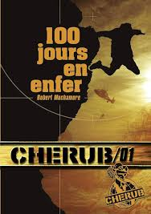
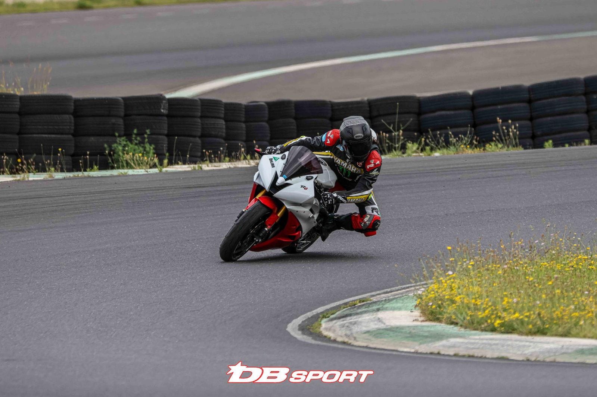

SALIEGE Tom :
Je m'appelle Saliege Tom, j'ai 19 ans et je viens d'Orange, dans le Vaucluse. Je suis actuellement étudiant en deuxième année du BUT Réseaux et Télécommunications à l'IUT Clermont Auvergne, site d'Aubière.
Depuis la classe de seconde et la découverte des sciences numériques et technologiques au lycée, je me suis intéressé au fonctionnement de l'informatique, en particulier aux réseaux et à la cybersécurité.
Je suis une personne curieuse, patiente et sérieuse. Je suis actuellement à la recherche d'un stage en réseaux d'une durée de 10 semaines, entre avril et juin.
J'ai obtenu le permis B en 2024, ce qui me permet de me déplacer plus facilement pour un potentiel stage.
Formation:
IUT Clermont Auvergne site d'Aubière -Clermont-Ferrand (63) - 2024-2026 :

Je suis actuellement en deuxième année du BUT Réseaux et Télécommunications (Bachelor Universitaire de Technologie) à l’IUT Clermont Auvergne, site d’Aubière.
Cette formation prépare les étudiants à intervenir dans différents domaines, tels que la programmation web et Python, les télécommunications et réseaux, la téléphonie, ainsi que la sécurité des réseaux, enseignée principalement à partir de la deuxième année.
Lycée de l'Arc Orange (84) :

J’ai effectué mes trois années de lycée en voie générale au lycée de l’Arc, avec pour spécialités Sciences de l’ingénieur, Physique-Chimie et Mathématiques, ainsi que l’option Mathématiques expertes en terminale.
J’y ai obtenu mon baccalauréat général lors de la session 2024, avec pour spécialités Mathématiques et Sciences de l’ingénieur.
Expérience professionnel :
IUT Clermont Auvergne site d'Aubière -Clermont-Ferrand (63) - 2025 :
Contexte/objectif/tarvail réalisé/résultat
Durant le premier semestre de ma deuxième année de BUT Réseaux et Télécommunications, j’ai assuré des cours de soutien pour des étudiants de première année rencontrant des difficultés. Ces cours portaient sur les matières suivantes : Mathématiques, Télécommunications et Informatique (programmation et installation).
Compétence :
Compétences personnels :
La curiosité :

J’aime m’intéresser à différents domaines afin d’acquérir de nouvelles connaissances. Par exemple, en terminale, j’ai choisi l’option Mathématiques expertes par curiosité, ce qui m’a ensuite aidé durant ma formation à l’IUT, où j’étais en avance sur le programme de mathématiques. De plus, j’apprécie échanger avec différentes personnes pour découvrir des domaines que je ne connais pas encore et ainsi enrichir mes compétences.
La patience :

Je suis quelqu’un de patient, qui n’est pas dérangé par le fait de réaliser une même tâche sur une longue période. Par exemple, lors de projets individuels, je préfère travailler sur une durée prolongée plutôt que de multiplier de courtes sessions. Cela me permet de rester concentré exclusivement sur une tâche précise et d’assurer un travail rigoureux.
Compétences aquises durant la formation R&T :
Programation :
Durant la formation j'ai appris à programmer dans différents langages et pour différentes utilisations.
En première année, on apprend à utiliser:
- python (notamment pour des fonctions mathématiques)
- HTML et CSS (pour créer ce portfolio),
- JavaScript et PHP (pour rendre les pages web interactives),
- SQL (notament dans des projet pour sauvegader des information)
En deuxième :
- Java (notament pour développer une application Android)
Télécomunication :
En télécommunications j'ai vu principalement les bases des systèmes électriques et des lois électriques. J'ai aussi fait plusieurs travaux pratiques sur la caractérisation de différents circuits comme:
- La fibre optique
- l'analyse de spectres de différentes fonctions
- La transmission TV
Réseau :
Durant la première année, j'ai principalement étudié le fonctionnement de base d'un réseau local en étudiant :
- les différentes couches du modèle OSI,
- le fonctionnement des appareils de base d'un réseau (routeur, switch, serveur windows(active directory), serveur linux)
Durant la seconde année, j'ai étudié de nouveaux protocoles plus sécurisé comme le DNSSEC ou encore les réseaux MPLS.
Téléphonie :
Durant le deuxième semestre de première année, j'ai pu étudier le fonctionnement d'un réseau téléphonique en entreprise, notamment en mettant en place un call serveur qui gérait un petit réseau téléphonique.
cybersécurité :
Durant la seconde année, j'ai commencé à étudier la cybersécurité. Notamment à l'aide de nouveaux protocoles plus sécurisé comme le DNSSEC.
Cependant, la partie la plus importante est la partie pentest où j'apprends actuellement à trouver des failles sur des machines virtuelles à l'aide de différents outils tel que :
- nmap
- Metasploit
- Hydra
Compétences linguistiques:
Anglais

A2/B1
Italien

A1
Projet:
Se sensibiliser à l'hygiène informatique et à la cybersécurité(SAE1.1) :
Contexte :
Ce projet, est le premier projet qu'on a eu lors de la formation et il était à réaliser par groupe de deux./p>
Objectif :
Ce projet consistait à faire des recherche sur les différents types de cyberattaques qu'il existé afin de les présenter lors d'un oral devant notre classe.
Travail réalisé
Pour réalisé ce projet, on a décider de se répartir le travail en deux. Mon binôme faisait les recherches sur les cyberattaque les plus complexes et moi je recherchais les cyberattaques les plus connus.
Après avoir terminer nos recherches, on a décidé de les présenter chacune de la même manière :
- une petite présentation
- les chiffres des attaques
- comment une attaque est réalisée
- comment on peut se protéger.
Résultats :
Lors de ce projet on a obtenu une moyenne de 11.25/20
Télecharger notre diaporamaS'initier aux réseaux informatiques (SAE1.2) :
Contexte
Ce projet était un projet individuel qui était à faire en totale autonomie durant l'ensemble du premier semestre.
Objectif :
L'objectif de ce projet était d'apprendre les bases de notre formation au cours de nombreux cours sur la plateforme CCNA afin d'acquérir la certification Cisco CCNA1.
Travail réalisé :
Pour réaliser ce projet j'ai dû suivre les cours sur la platforme CCNA et faire les différents exercices et tests pour valider mes acquis. J'ai aussi du réaliser plusieurs travaux pratiques sur Packet Tracer pour mettre en application les connaissances acquises durant les cours.
note du projet :
Lors du test final j'ai obtenu la note de 12.72/20
SAE2.4: projet integratif
Contexte :
Ce projet était un projet de groupe de 5 personnes à réaliser durant le second semestre de la première année.
Objectif :
L'objectif de ce projet était de mettre en place un réseau local sécurisé pour une petite entreprise de 6/7 personnes.
Travail réalisé :
Pour réaliser ce projet, nous avons décidé de nous répartir le travail en plusieurs parties :
- La partie réseau (mise en place des switchs, routeurs)
- La partie serveur windows (mise en place d'active directory pour gérer les utilisateurs et groupes)
- la partie serveur linux (mise en place d'un serveur DHCP, DNS, Messagerie, Cron)
-La partie téléphonie (mise en place d'un call serveur sur une VM linux avec 2 téléphone SIP)
- La partie sécurité (mise en place de différentes règles de sécurité sur les appareils du réseau comme le parefeu)
- La partie documentation (création d'un serveur pour un schéma de l'entreprise et un compte rendu sur le travail réalisé)
Pour ma part, durant la première journée je me suis occupé de toute la partie routage de notre infrastructure. Ensuite, j'ai mis en place le call server qui à été la partie la plus dur car on avait aucune aide, ce sujet n’ayant pas encore été abordé dans la formation.
Résultats
Lors de ce projet j'ai obtenu la note de 13.5/20
Télecharger mon compte renduSAE3.2: Déveloper des application communicantes.
Contexte :
Ce projet était un projet individuel à réaliser durant le premier semestre de la deuxième année.
Objectif :
L'objectif de ce projet était de créer une application android coffre fort qui permettait d'ajouter ou supprimer des fichiers dans notre application
Travail réalisé :
Pour réaliser ce projet j'ai dû apprendre à utiliser le langage Java et Android studio. J'ai ensuite pu créer une application qui permettait de créer un compte utilisateur, de se connecter, d'ajouter des fichiers (image, vidéo, document) et de les supprimer.
Télecharger mon compte renduEnfin j'ai mis en place un serveur Rsync qui permettait de sauvegarder les fichier des PC tout les soirs avant de partir.
Résultats
Pour l'instant je n'ai pas encore eu de résultat sur cette application.
Divers:
En dehors des études j'aime bien faire différentes activitées :
Les jeux videos
J'aime beaucoup jouer à différents jeux vidéo notamment des jeux de stratégies car ils permettent de réfléchir et de développer des tactiques pour prendre l’avantage.
J'aime aussi beaucoup les jeux en équipes car cela renforce l'esprit d'équipe et permet de discuter avec de nouvelles personnes parfois étrangères.

La lecture
J'aime aussi beaucoup lire des livres notamment des romans et quelques mangas car cela me permet de me détendre et de me reposer.

La moto
La moto est ma passion et mon sport principal qui me fait tout oublier car cela demande une grande concentration durant une session et une endurance physique. J'aime aussi faire des balades à moto sur route pour visiter des paysages magnifiques.
Mon_CV:
Vous pouvez télécharger mon CV ici :
Télecharger mon CVContact:
Si vous avez besoin de renseignements suplémentaires voici mon e-mail.
Mon adresse mail
tom.saliege@etu.uca.fr